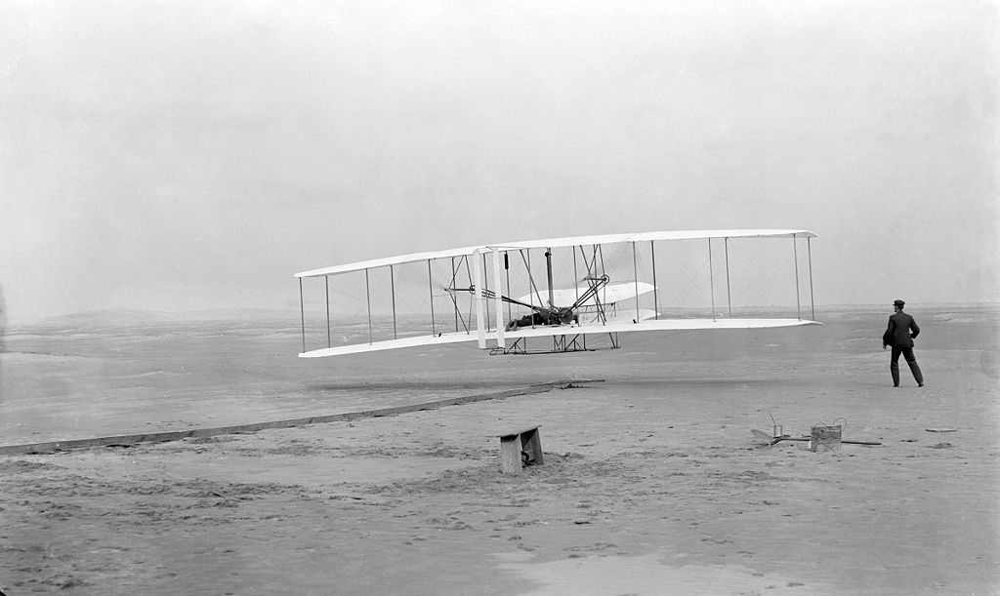
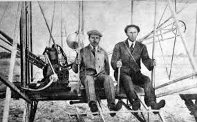

El mundo de la aviación
Los hermanos wright, ingenieros, inventores y pioneros de la aviación
El invento del aeroplano
Durante la década de 1890, los hermanos empezaron a interesarse por el mundo de la aviación, especialmente con la idea de fabricar y hacer volar una aeronave más pesada que el aire que pudiese despegar por medios propios. En esa época, ambos administraban una fábrica de bicicletas en Dayton (Ohio, Estados Unidos), y comenzaron a leer y estudiar con gran interés, libros y documentos relacionados con la aviación.2 Siguiendo las ideas de Lilienthal, en el año 1899 empezaron a fabricar planeadores. A finales de siglo comenzaron a realizar sus primeros vuelos con éxito con sus prototipos, en Kitty Hawk (Carolina del Norte), lugar elegido debido a que en esa zona podían encontrar vientos constantes, que soplaban también en una misma dirección, facilitando así los vuelos con planeadores. Además, la zona disponía de un suelo plano, que hacía más fáciles los aterrizajes.
Después de la realización de varias pruebas y vuelos con planeadores decidieron, en 1902, fabricar un avión más pesado que el aire. Se convirtieron en el primer equipo de diseñadores que realizó pruebas serias para intentar solucionar ciertos problemas aerodinámicos, de control y de potencia, que afectaban a los aviones fabricados en esa época. Para la realización de un vuelo con éxito, la potencia del motor y el control del aparato serían esenciales, y al mismo tiempo el aparato precisaba ser bien controlado. Las pruebas fueron difíciles, pero los Wright fueron perseverantes. Al mismo tiempo, fabricaron un motor con la potencia deseada, y solucionaron los problemas de control de vuelo, gracias a una técnica denominada alabeo, poco usada en la historia de la aviación, pero que funcionaba en las bajas velocidades a las que el avión volaría.
El avión que fabricaron era un biplano al que denominaron Flyer (en español: Volador). El piloto permanecía echado sobre el ala inferior del avión, mientras que el motor se situaba a la derecha de este, y hacía girar dos hélices localizadas entre las alas. La técnica del alabeo consistía en cuerdas atadas a las puntas de las alas, de las que el piloto podía tirar o soltar, permitiendo al avión girar sobre los ejes longitudinal y vertical, lo que permitía que el piloto tuviera el control del avión. El Flyer estaba dotado de maniobrabilidad longitudinal y vertical. Supuso una mejora importante en la forma de maniobrar respecto a los planeadores de Otto Lilienthal, que aunque ya permitían el control de la aeronave, se realizaba principalmente mediante el desplazamiento del propio tripulante para cambiar el centro de gravedad, de forma análoga a como se hace en las modernas alas delta.


| Item |
Detalle |
Cantidad |
precio |
Total |
| 1 |
barquilla |
10 |
20 |
200 |
| 2 |
helado |
20 |
10 |
200 |
| 3 |
café |
30 |
20 |
600 |